Префектура Кагава · Архитектура · Искусство
Кэндзо Тангэ и рождение «арт-префектуры» Кагава
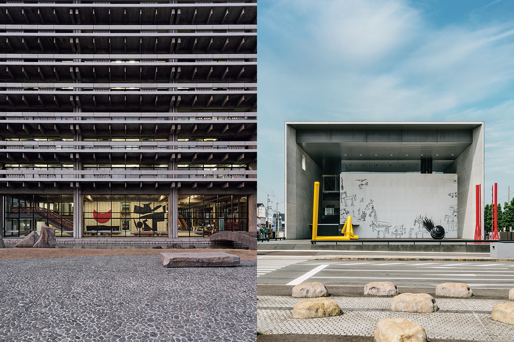
Кагаву знают как «префектуру удона», но у неё есть и второе лицо: её называют «арт-префектурой». Здесь стоят музеи, которые ценят прежде всего как архитектуру, а в городах и на островах разбросаны работы Исаму Ногути и Масаюки Нагарэ. Отправной точкой этого пути стало здание правительства префектуры, построенное в 1958 году Кэндзо Тангэ (1913–2005), одним из самых известных японских архитекторов XX века и лауреатом Притцкеровской премии.
Начало
Кто заложил основу «арт-префектуры»
В Кагаве искусство живёт в повседневности: здесь есть музеи, к которым едут ради самой архитектуры, общественные здания, признанные шедеврами, и скульптуры мирового уровня под открытым небом.
Основу сегодняшней «арт-префектуры» заложил Масанори Канэко (1907–1996), занимавший пост губернатора Кагавы с 1950 по 1974 год, шесть сроков подряд. Он развивал инфраструктуру, занимался брендингом удона Сануки и укреплением японо-американских связей, а главное, был убеждён: «Политика и искусство суть одно; и то и другое должно служить тому, чтобы обогащать человеческую душу». Строительство здания правительства, создание внутри него дизайнерского отдела и приглашение выдающихся творцов надолго определили культурный облик Кагавы.
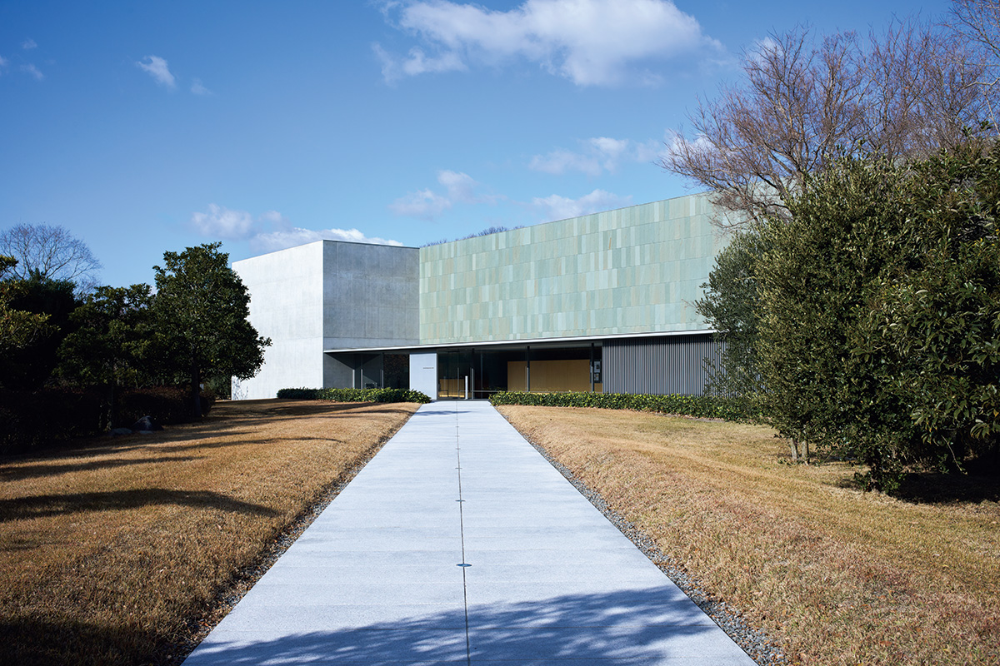
Модернизм Кэндзо Тангэ
Здание правительства префектуры Кагава
После войны Такамацу выгорел от авианалётов. Заказывая реконструкцию здания правительства, Канэко просил Тангэ: «Пусть это будет здание, достойное эпохи демократии». Модернистское здание правительства стало символом начала новой эпохи Кагавы.
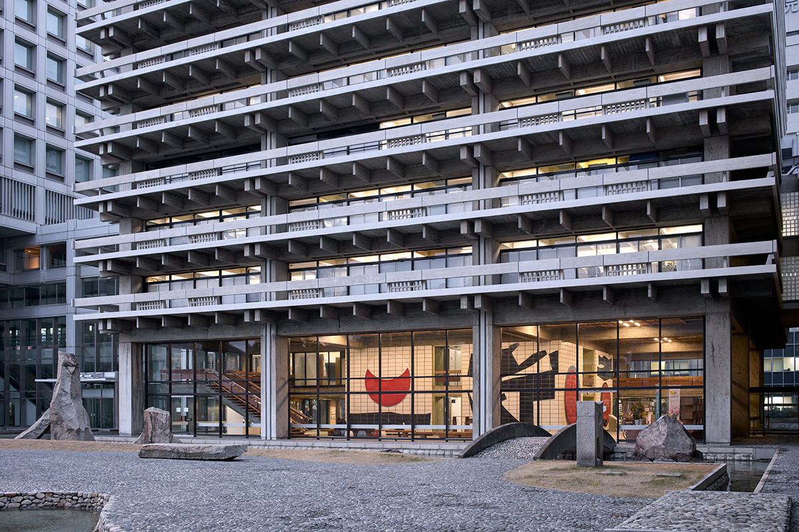
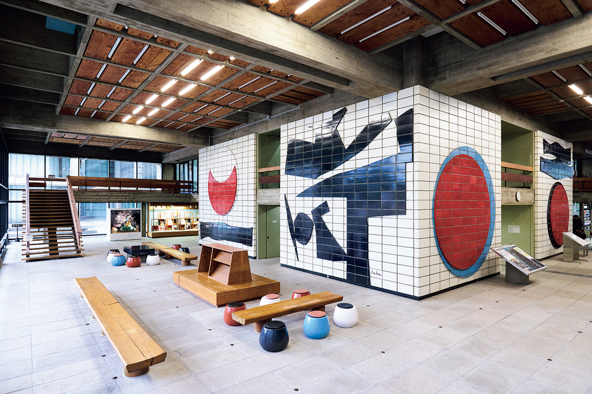
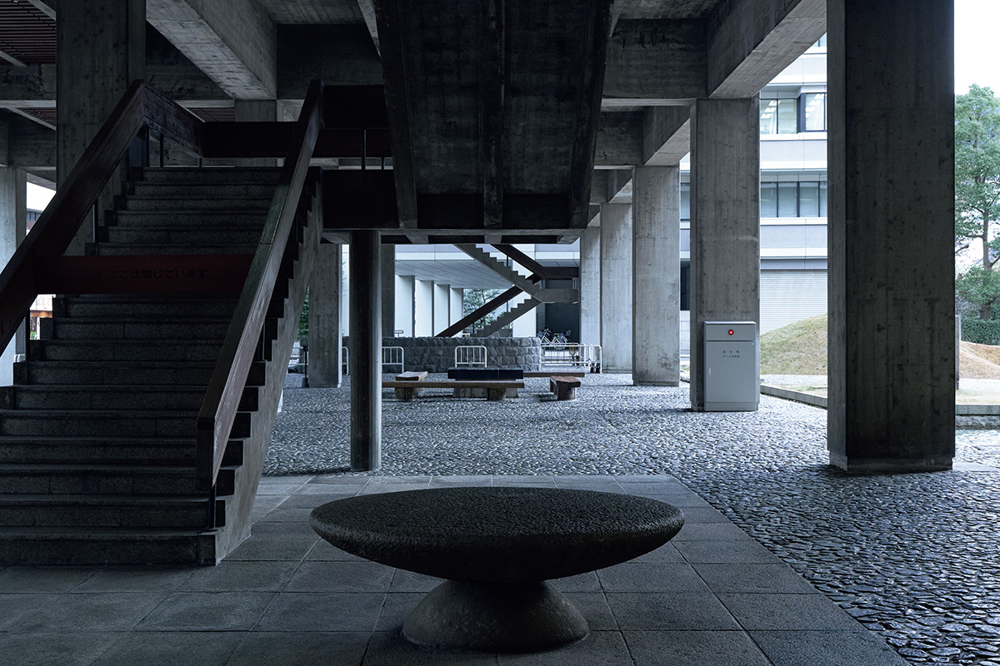
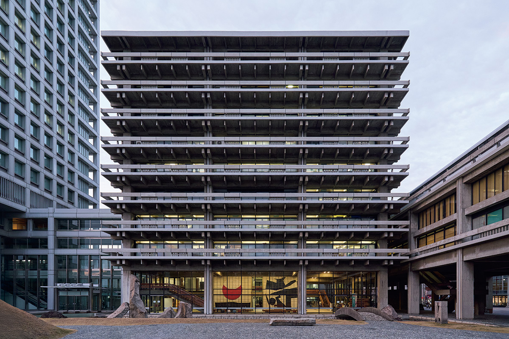
Структуру стоек и балок, непрерывные малые и большие балки, балконы с перилами, то есть формы традиционного японского деревянного зодчества, здесь выразили в железобетоне. Чтобы сделать здание открытым для жителей, добавили стеклянный вестибюль первого этажа и просторное пилоти. Внутри появились панно художника Гэнъитиро Инокумы, мебель дизайнера интерьеров Исаму Кэммоти и деревянная мебель мастерской «Сакура сэйсакусё», которая позже унаследовала изготовление мебели Джорджа Накасимы. По настоянию Канэко широко использовали местные материалы, в том числе камень адзи-иси.
Здание правительства префектуры Кагава (Восточный корпус)
- Адрес
- префектура Кагава, Такамацу, Бантё 4-1-10
- Телефон
- +81 87-831-1111
- Часы работы
- 8:30–17:15 (для посетителей доступны будние дни)
- Выходные
- суббота, воскресенье, праздники
- Вход
- бесплатно
Новые архитектурные достопримечательности города
«Анабуки-арена Кагава» (префектуральная арена)
В 2025 году на набережной Санпорт-Такамацу открылась новая арена. Её спроектировала архитектурная группа SANAA: главная и малая арены и залы боевых искусств накрыты одной большой кровлей, похожей на острова Сэтоути, а станция, площадь и порт связаны в единое общественное пространство.
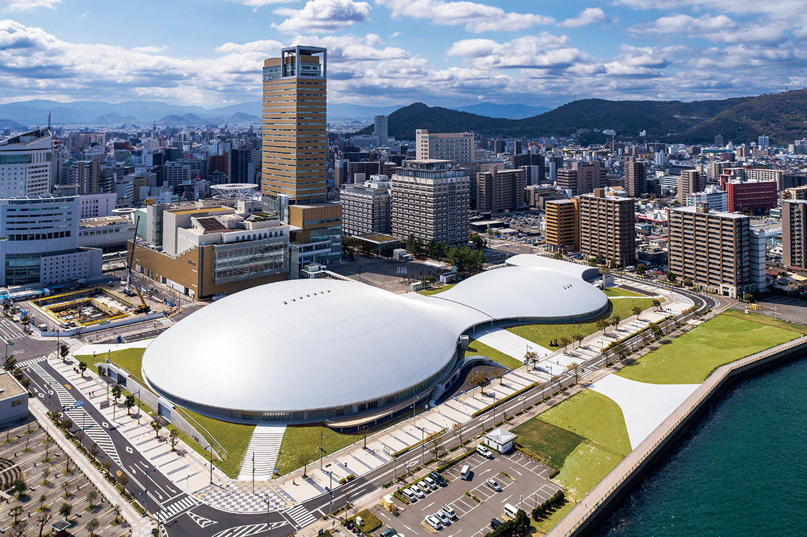
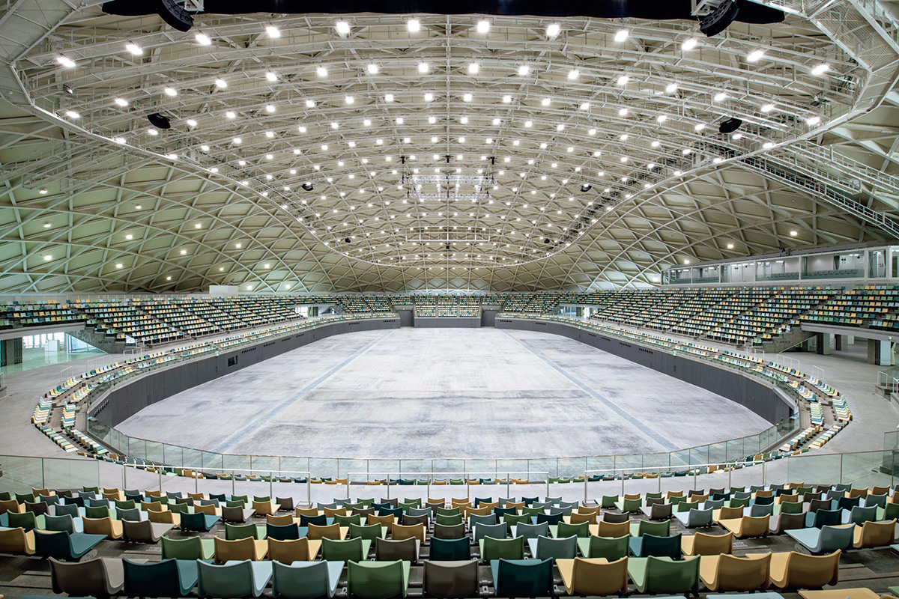
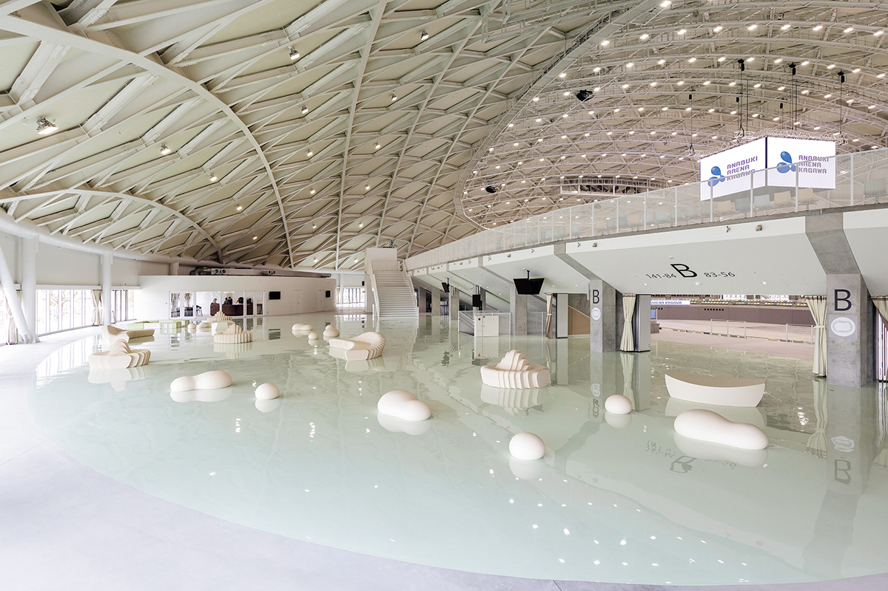
«Зона общения» главной арены в дни без событий открыта, и здесь можно отдохнуть в кафе на скамейках. Арена получила высшую награду учреждённой ЮНЕСКО премии «Версаль» в категории «самая красивая арена мира 2025», так что её архитектурную ценность признали и в мире.
«Анабуки-арена Кагава» (префектуральная арена)
- Адрес
- префектура Кагава, Такамацу, Санпорт 6-11
- Телефон
- +81 87-825-1313
- Часы работы
- 9:00–21:00 (зависит от мероприятий)
- Выходные
- 29 декабря–3 января, один день в месяц
- Вход
- зона «общения» открыта бесплатно; события и аренда платные
- Как добраться
- рядом с портом Такамацу и станцией JR Такамацу
- Сайт
- kagawa-arena.com
Искусство в архитектуре
Наслаждаться искусством в знаменитых зданиях
MIMOCA, музей Инокумы в Маругамэ
В 1991 году в честь 90-летия города Маругамэ перед станцией открылся Музей современного искусства Гэнъитиро Инокумы. Проект выполнил Ёсио Танигути, сын архитектора, близкого Инокуме. «Работы выигрывают от архитектуры, а архитектура становится красивее благодаря работам», говорил Танигути, и здание в полной мере воплощает эти слова.
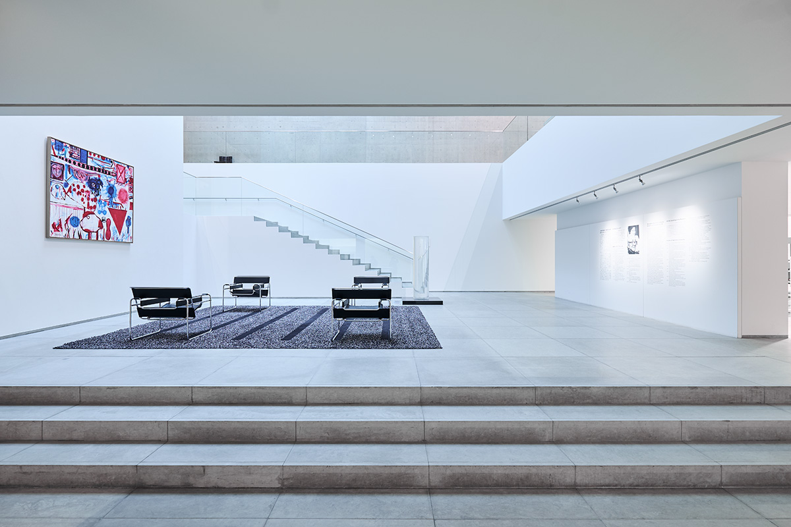
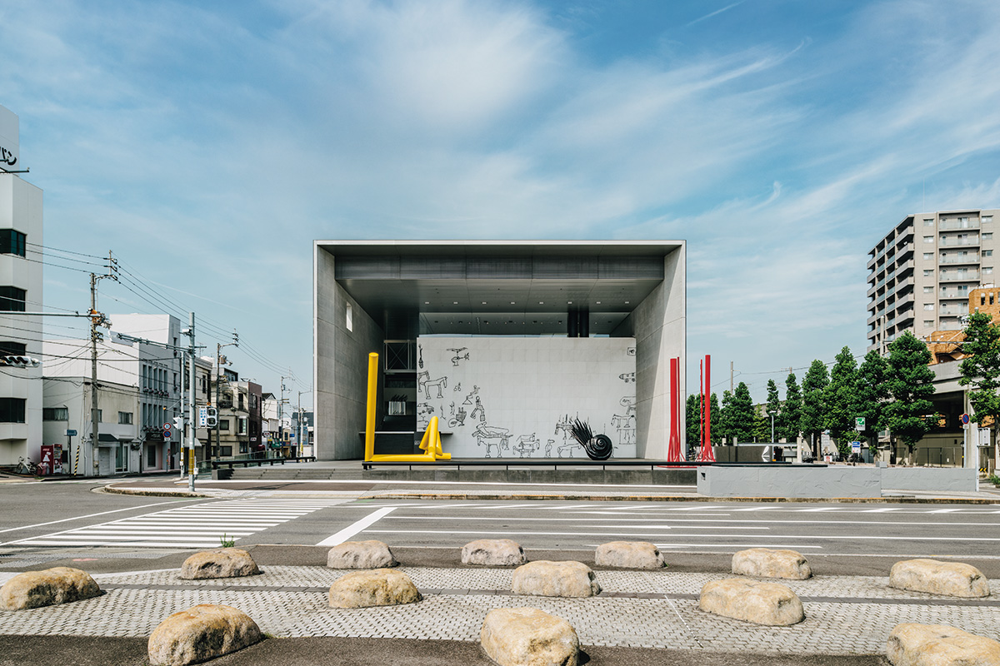
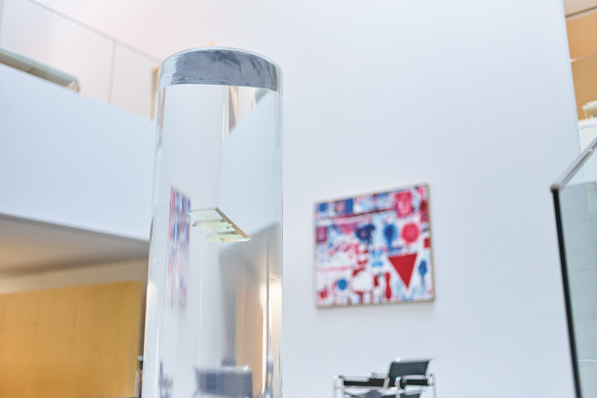
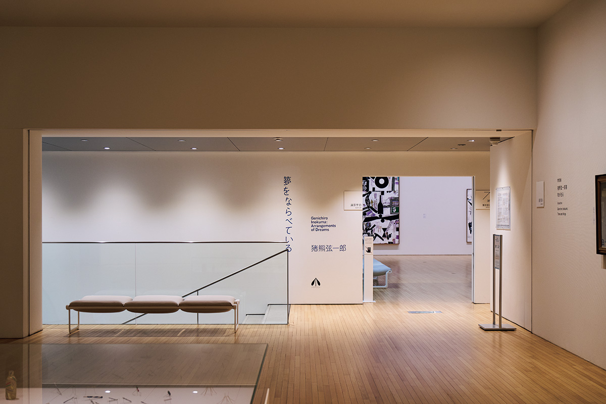
Музей хранит около 20 тысяч работ Инокумы, который более 70 лет искал в живописи «красоту» и новые средства выражения, а также множество документов. Помимо постоянной и временной экспозиций, он работает и как музей современного искусства, показывая Марину Абрамович, Хироси Сугимото и Тихару Сиоту. Продолжая мысль Инокумы «музей это больница для души», MIMOCA остаётся местом, где посетителю становится легче.
Музей современного искусства Гэнъитиро Инокумы (MIMOCA)
- Адрес
- префектура Кагава, Маругамэ, Хамамати 80-1
- Телефон
- +81 877-24-7755
- Часы работы
- 10:00–18:00 (вход до 17:30)
- Выходные
- понедельник (если праздник, то следующий будний день), 25–31 декабря, временные закрытия на смену экспозиции
- Вход
- постоянная экспозиция: взрослый 300 иен, студенты 200 иен; вход для школьников и лиц до 18 лет бесплатный; спецвыставки по своему тарифу
- Как добраться
- 2 минуты пешком от южного выхода станции JR Маругамэ
- Сайт
- mimoca.jp
Музей Кайи Хигасиямы в Сэтоути
Ещё одно здание Танигути стоит на острове Сямидзима в Сакаидэ, откуда виден мост Сэто-Охаси. Подход к музею напоминает знаменитую работу Кайи «Дорога»; после залов, где работы рассматривают не спеша, спускаешься на первый этаж, и в лаундже открывается вид на Сэтоути.
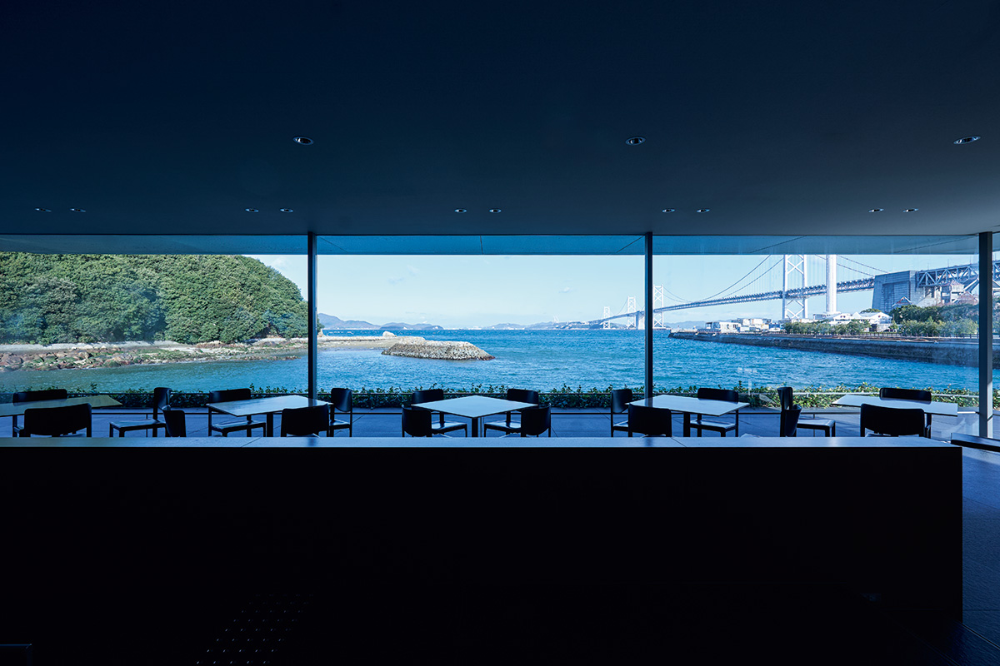
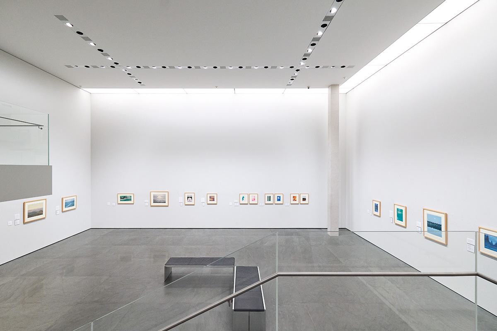
Дед Кайи Хигасиямы (1908–1999), художника, писавшего прозрачные пейзажи в традиции нихонга, родился на острове Хицуисидзима у Сакаидэ, поэтому музею передали около 300 гравюр, и в 2005 году он открылся. Здание стоит лицом к Хицуисидзиме, а его фасад из природного камня «вермонт-грин» сочетается с пейзажем Сэтоути. В двух залах, соединённых лестницей, четыре раза в год показывают тематические выставки из собрания.
Музей Кайи Хигасиямы в Сэтоути
- Адрес
- префектура Кагава, Сакаидэ, остров Сямидзима, 224-13
- Телефон
- +81 877-44-1333
- Часы работы
- 9:00–17:00 (вход до 16:30)
- Выходные
- понедельник (если праздник, то следующий день), 27 декабря–1 января
- Вход
- тематическая выставка 400 иен, специальная выставка 800 иен
- Как добраться
- из Сакаидэ на автобусе около 30 минут, у парка в честь моста Сэто-Охаси
Мемориальный зал Джорджа Накасимы
Рядом с мастерской «Сакура сэйсакусё», где делают мебель на заказ и мебель Джорджа Накасимы, находится мемориальный зал. На втором этаже выставлено около 60 работ, от первого стула Накасимы до серии «Коноид-чэр»; на первом в кафе можно отдохнуть на его мебели. Мастер, называвший себя «вудворкером», любил дерево, и зал передаёт его отношение к жизни и к работе с материалом.
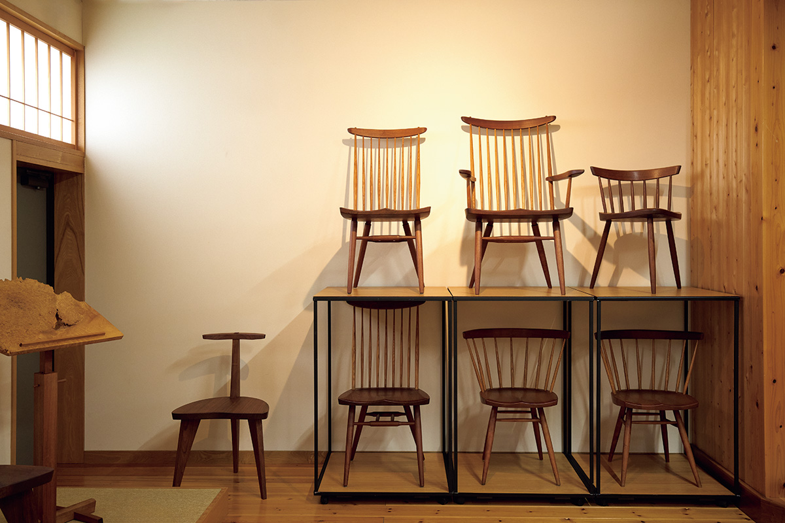
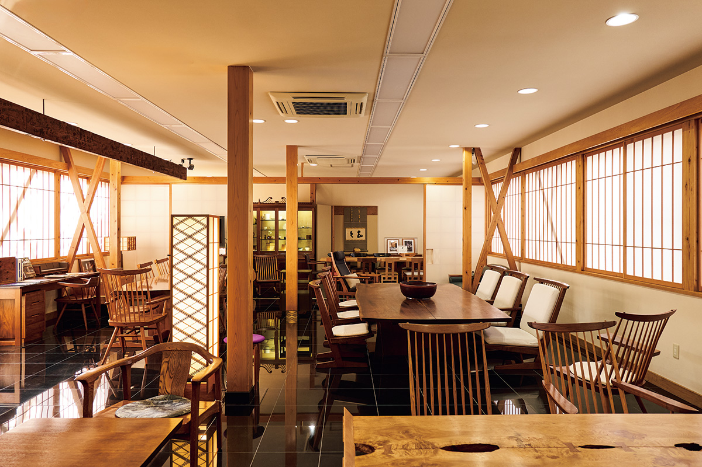
Мемориальный зал Джорджа Накасимы
- Адрес
- префектура Кагава, Такамацу, Мурэтё-Омати 1132-1 (в мастерской «Сакура сэйсакусё»)
- Телефон
- +81 87-870-1020
- Часы работы
- 10:00–17:00 (вход до 16:30)
- Выходные
- воскресенье, праздники, летние и новогодние каникулы
- Вход
- взрослый 1000 иен, школьники 300 иен
- Как добраться
- около 5 минут пешком от станции Котодэн Сиоя; от станции JR Такамацу на машине около 25 минут
- Сайт
- sakurashop.co.jp
Наследие «губернатора-дизайнера» Канэко и Инокумы, исполнявшего роль «арт-директора Кагавы», живёт и сегодня: множество архитектурных и художественных мест и Триеннале Сэтоути. Искусства, которое встречается только здесь, очень много. Доверившись мягкому климату Сэтоути, отправляйтесь в путешествие по «арт-префектуре» Кагава.
Фото: Марико Тая, префектура Кагава.